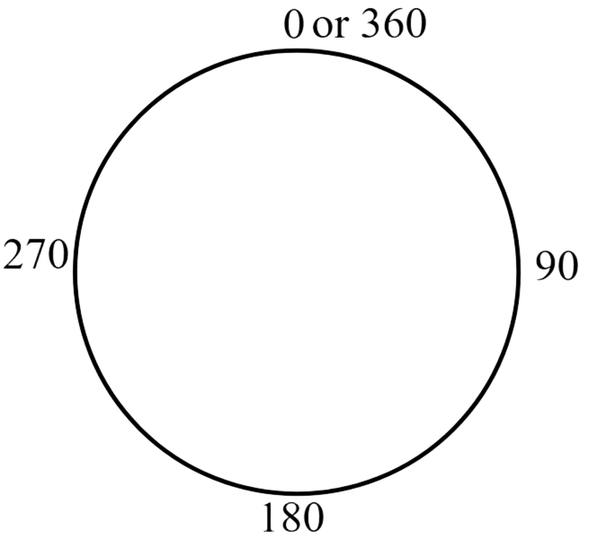
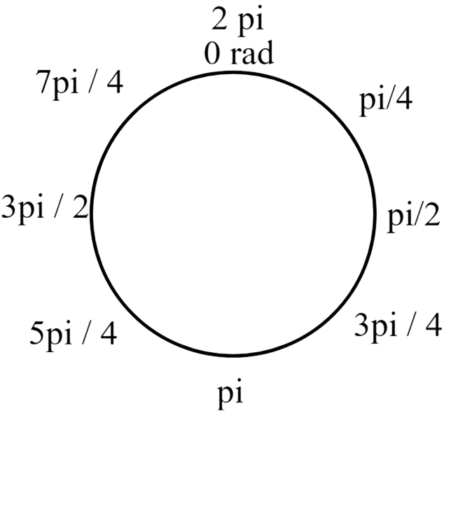

Introduction to Trigonometry
Introduction
Trigonometry is the branch in mathematics that focuses primarily on triangles and angles. It is crutial in mathematics as certain architectures and shapes
require trigonometry to be calculated.
Revolutions
A circle is the perfect example of angles. You see, a line going around the circle's perimeter is 360°. A circle is comprised of 360 degrees.
This is called a revolution...

A full circle contains one revolution which is 360°. This is where radians comes in as they are even more essential in mathematics than
degrees ever were. This is also the point where pi or &pi gets introduced. One revolution in radians is 2π and since π equals 3.14.. we can deduct
that 1 π in radians is 180°. This formula is fundumental in Trigonometry...

This also means that 1° is pi over 180 radians...
Notebook
Degrees: A measurement unit used to quantify the size of an angle.
Radians: A measurement units used to quantify the size of an angle in pi values.
Revolution: A revolution is 360° or a full circle
Formulas
360° = 2π radians = 1 Revolution
180° = π radians
1° = π / 180 radians
Here are some examples...
π / 4 --> π / 4 * 45 --> 45 / 180 π --> 45°
3π / 2 --> 3 π / 2 * 90 --> 270 / 180 π --> 270°
2π / 6 --> 2π / 6 * 30 --> 120 / 180 π --> 120°
8π / 18 --> 8π / 18 * 10 --> 80 / 180 π --> 80°
Notice how the divisor is always 180 when I multiply. This is a common trick on how you can convert radians with pi to degrees. You multiply the dividend and the divisor by a certain number
that can make the divisor equal 180, then you remove the / 180 and then you're done!
You can also convert degrees to radians by using the same method.. just the other way...
45° --> 45 / `180 --> 9 / 36 --> 1 / 4 radians
Keep simplifying until you can't.
14° --> 14 / `180 --> 7 / 90 --> 7 / 90 radians
32° --> 32 / `180 --> 16 / 90 --> 8 / 40 --> 1 / 5 --> 1 / 5 radians
78° --> 78 / `180 --> 39 / 90 --> 13 / 30 --> 13 / 30 radians
The Unit Circle
The Unit Circle is a circle at the center of the coordinate system with a radius of 1. The formula for creating the Unit Circle is x2 + y2 = 1.
Done? Here are other Links
Back to Main Page
Back to Informational
If you are seeing this, your clock is missing a ding-dong
If you are seeing this, your calender needs a pin or two.